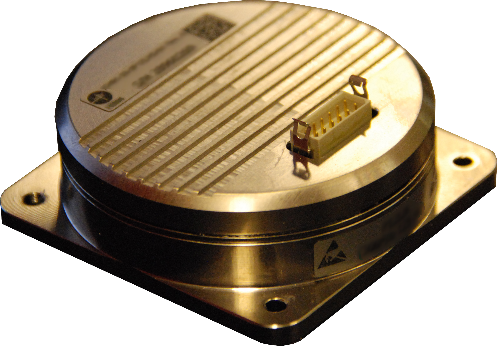

Gyroscopes failure
The most common cause of gyro instrument failure is bearing failure. It can be caused by one or more of the following variables:
- Normal wear due to time in service.
- Adverse wear due to the instrument ingesting dirty air via a missing or defective gyro/or vacuum relief valve filter in a vacuum system.
- Contamination by debris from a failed vacuum pump in a pressure system where the filter was inadequate and/or the system was not purged correctly following pump failure.
- mpact damage (brinelling) to the gyro rotor and gimbal bearings. (In brinelling, the ball bearings smash into the race, creating tiny craters or pot holes and make for rough running.
A gyro instrument’s definition of damage-causing shock or impact is distressingly inclusive. A heavy landing can cause damage, as can rough handling during installation, storage or transport. CASA Airworthiness Bulletin 31–008 Issue 2 says, ‘Dropping or handling a typical gyro instrument so that it impacts a hard surface from about 7 mm (¼ inch approx.) can result in something like a 14G shock to the gyro which can brinell the bearings and result in vibration, accelerated bearing wear, loss of gyro RPM and excessive heading drift in directional gyros. While some directional and vertical gyro designs may incorporate vibration isolation absorbers, the rate gyro (turn and bank) may not, making it particularly sensitive to even light handling shocks.
Drawbacks of Ring Laser Gyroscopes
The two RLG counter-propagative waves experience a lock-in effect at low rotation rates usually below 100°/h) that prevents direct measurement around zero. The RLG utilizes a mechanical dither to overcome this dead-zone effect, which degrades the theoretical rate of measurement noise by the order of magnitude. It also produces vibrations, requiring costly damping mechanisms to limit the increase in aircraft acoustic signature.
Schematic of a Ring Laser GyroscopeA sealed cavity filled with a mixture of helium and neon gases is also used by RLGs as a medium to propagate the laser; it is considerably harder to maintain. Since the cavity can not be perfectly hermetically sealed, there is some residual gas leakage that limits the RLG's life. There is also a wearing-out problem with the high-voltage discharge electrodes that excite the amplifying gas. As a consequence, RLGs require expensive retrofits every five to seven years.
Drawbacks of Fibre Optic Gyroscopes
Although there are high-impact applications such as gun-pointing systems, high-performance space applications, navigation system fiber optic gyroscopes, navigation systems for inertial missiles, remotely operated vehicles, autonomous unmanned vehicles. However, FOGs often need to be paired to overcome their sensitivity to vibration with multi-axis FOGs and accelerometers. Due to higher calibration requirements, FOGs also have longer production times. A detectable angular velocity is limited to +/- π/2 rad with respect to the phase difference due to the Sagnac effect.
 Image of a Fiber Optic GyroscopeDrawbacks of MEMS Gyroscopes
The MEMS-based gyroscope (MEMS) has less temperature, humidity and stress stability, some of which can be compensated by software, providing more FOG or RLG integration errors, often with different performance across multiple units.
MEMS measurementsMEMS gyroscope versions are available at lower cost, the free-moving gyroscope depends on the Earth's rotation, so gyroscopes can not be used for navigation purposes by fast-moving objects moving from east to west. Despite the non-applicability of navigation use, however many companies have invested and researched in the aviation use of the MEMS gyroscope.
Click the link to view the Team, Team reflections, Team references.